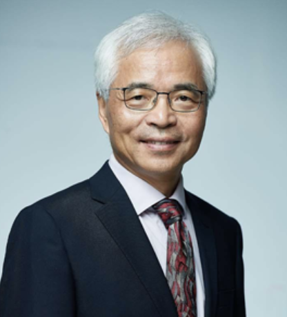

Director
Mingjie Zhang
Chair Professor; Dean of the School of Life Sciences; Member of the Chinese Academy of Sciences; Founding Member of the Hong Kong Academy of Sciences.
Biography
He received the Outstanding Scholar Award from the Croucher Foundation in Hong Kong in 2003 and the Second Prize of the State Natural Science Award in 2006. In 2011, he received the Ho Leung Ho Lee Foundation Prize for Science and Technology and was elected to the Chinese Academy of Sciences. He became a Founding Member of the Hong Kong Academy of Sciences in 2015 and received the Tan Jiazhen Life Science Achievement Award in 2021.